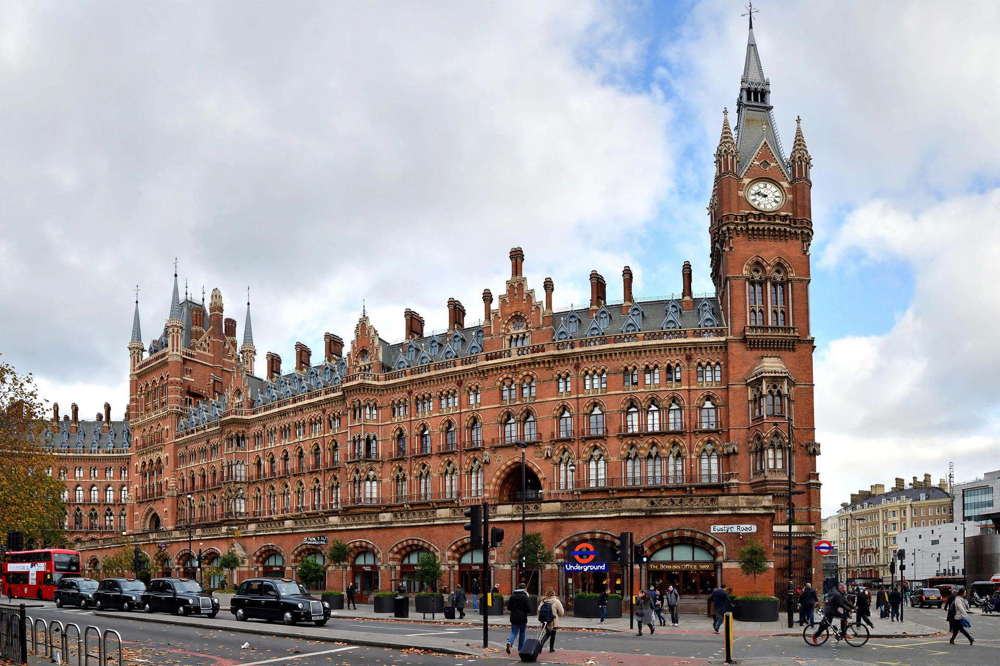

St Pancras railway station, officially known since 2007 as London St Pancras International, is a major railway terminus on Euston Road in the London Borough of Camden. Opened in 1868 by the Midland Railway, it is famous for William Henry Barlow's single-span trainshed - then the largest in the world - and for George Gilbert Scott's Gothic Revival Midland Grand Hotel fronting the station. Since 2007 it has been the London terminus of Eurostar services through the Channel Tunnel.

The Midland Grand Hotel frontage on Euston Road.
| London St Pancras International | |
| Location | Euston Road, Camden, London |
|---|---|
| Opened | 1 October 1868 |
| Architects | William Henry Barlow (trainshed); George Gilbert Scott (hotel) |
| Platforms | 15 |
| Operators | Eurostar, East Midlands Railway, Thameslink, Southeastern |
| Listed status | Grade I |
The Midland Railway built St Pancras to give it its own London terminus. Barlow's trainshed, an arched iron-and-glass roof spanning 74 metres (243 ft), was an engineering landmark. Scott's Midland Grand Hotel (1873-76), with its clock tower and lavish interiors, became one of the most celebrated Victorian buildings in Britain. Beneath the station, the undercroft was designed to store beer barrels arriving from Burton upon Trent.
After the hotel closed in 1935 the building deteriorated, and in the 1960s British Rail proposed demolishing the station. A campaign led by John Betjeman and the Victorian Society secured Grade I listing in 1967 and saved it - a landmark victory for conservation.
The station was comprehensively rebuilt as the terminus of High Speed 1 and reopened by Queen Elizabeth II on 6 November 2007, with Eurostar services transferring from Waterloo. The restored Barlow shed now shelters Eurostar, domestic high-speed and Midland services; sculptures include Paul Day's The Meeting Place and a statue of Betjeman. The former hotel reopened in 2011 as the St Pancras Renaissance Hotel.